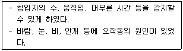
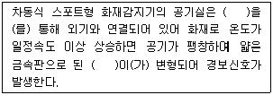
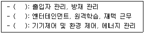

경비지도사-2차(기계경비개론) (2019-11-16 기출문제)
1. ROM(Read Only Memory)의 종류가 아닌 것은?
- PROM
- EPROM
- EEPROM
- EDPROM
(정답률: 알수없음)

2. 경비업법상 경비업자는 선임ㆍ배치된 경비지도사에 결원이 있거나 자격정지 등의 사유로 그 직무를 수행할 수 없는 때에는 몇 일 이내에 경비지도사를 새로이 충원하여야 하는가?
- 15
- 20
- 25
- 30
(정답률: 알수없음)
3. 무인경비시스템 설치기준에 관한 설명으로 옳은 것은?
- 전기 분전반으로부터 30 cm 이하 떨어진 곳에 설치한다.
- 열선감지기는 반드시 창이나 창문을 향하여 설치한다.
- 주장치는 경비구역 내부에 설치하는 것을 원칙으로 한다.
- 철문에 진동감지기는 전력상실을 방지하기 위해 스페이서(spacer)를 사용한다.
(정답률: 92%)
4. 컴퓨터의 보조기억장치가 아닌 것은?
- 자기 드럼
- 자기 코어
- 자기 디스크
- 자기 테이프
(정답률: 알수없음)
5. 정보의 단위로 가장 적은 것은?
- 바이트(Byte)
- 워드(Word)
- 비트(Bit)
- 니블(Nibble)
(정답률: 알수없음)
6. 외곽침입감지기 원리에 관한 설명으로 옳지 않은 것은?
- 울타리를 넘거나 절단 시에 발생되는 진동을 감지
- 침입시도 시 발생하는 케이블의 요동에 의한 광 패턴의 변화를 감지
- 일정한 전자계를 형성해 두어 침입자에 의한 교란 현상을 감지
- 계절과 무관하게 설치하여 오경보를 감지
(정답률: 알수없음)
7. 마이크로웨이브 센서의 광학적 특성은?
- 직진성
- 충격성
- 압력성
- 파괴성
(정답률: 알수없음)
8. 외곽침입감지장치의 감지방식으로 옳지 않은 것은?
- 광망형
- 탐색형
- 복합형
- 장력형
(정답률: 알수없음)
9. 외곽침입감지장치의 선정원칙으로 옳지 않은 것은?
- 내구성이 양호
- 오경보, 오작동의 최소화
- 설치 및 유지보수의 어려움
- 사용, 조작이 간편하고 경보 식별이 용이
(정답률: 알수없음)
10. 다음 A경비회사에서 구축한 외곽침입감지기는?

- 관측형
- 전력형
- 전자계형
- 평행2선식형
(정답률: 알수없음)
11. 전용회선 통신방식의 단점이 아닌 것은?
- 시설이 복잡하고 관제부담이 크다.
- 회선구축을 위한 시간이 소요된다.
- 전용회선 시설이 되지 않은 지역은 제약을 받는다.
- 독자적인 망 구축 및 다양한 단말기 접속이 가능하다.
(정답률: 알수없음)
12. 기계경비시스템의 컨트롤러 기능으로 옳지 않은 것은?
- 신호전송
- 지역별 감시 및 제어
- 감시신호의 수신과 판별
- 인간의 감각을 대신하여 신호 검출
(정답률: 알수없음)
13. 로컬 기계경비시스템의 구성요소가 아닌 것은?
- 감지장치
- 경보장치
- 통제장치
- 조향장치
(정답률: 알수없음)
14. 기계경비시스템 용어 중 전기정에 관한 설명으로 옳은 것은?
- DC 전원을 공급하는 장치
- 전기적 제어신호로 출입문을 개폐하는 장치
- 신호를 수신하여 관제실로 다시 송신하는 장치
- 전기량, 물리량 등의 변화 상태를 감시하는 장치
(정답률: 알수없음)
15. 입력이 0과 1이거나 1과 0이면 출력이 1이 되는 논리회로는?
- 배타적논리합 회로
- 논리곱 회로
- 부정 회로
- 버퍼 회로
(정답률: 알수없음)
16. 인간의 감각과 센서의 대응으로 옳지 않은 것은?
- 시각: 압력 감지기
- 청각: 음향 감지기
- 후각: 가스 감지기
- 촉각: 습도 감지기
(정답률: 알수없음)
17. 초음파 센서의 장점이 아닌 것은?
- 구조가 간단하다.
- 보수 점검이 쉽다.
- 정밀도가 낮고 안정성이 있다.
- 흐름을 방해하지 않고 측정이 가능하다.
(정답률: 100%)
18. A은행에 기계경비시스템 설계 시 유의사항으로 옳지 않은 것은?
- 중복규제는 피한다.
- 경비대상물은 규제한다.
- 무 감지 및 오동작이 없도록 경비계획을 수립한다.
- 차등규제는 지양하고 입지조건에 따라 일괄규제를 한다.
(정답률: 알수없음)
19. 불꽃감지기의 작동원리에 관한 설명으로 옳은 것은?
- 주위 온도가 일정한 온도 상승률 이상이 되었을 때 작동한다.
- 주위의 공기가 일정 온도 이상의 연기를 포함한 경우에 작동한다.
- 화재 시에 불꽃에서 나오는 자외선이나 적외선의 일정량을 감지하여 작동한다.
- 셔터 틀의 감지기에 대응하는 위치에 자석 또는 자석판을 부착하여 작동한다.
(정답률: 알수없음)
20. 기계경비시스템에서 비상버튼 설치위치로 옳은 것은?
- 조작하기 어려운 장소에 설치한다.
- 위험발생을 쉽게 확인할 수 없는 장소에 설치한다.
- 문 근처에는 문이 열리는 쪽에 설치한다.
- 사람이 누를 수 없도록 높이를 고정하여 설치한다.
(정답률: 알수없음)
21. 디지털 영상 무손실 압축 기술은?
- GIF
- JPEG
- MPEG – 2
- MPEG - 4
(정답률: 알수없음)
22. CCTV 카메라 영상을 다수의 모니터로 전송하는 장치는?
- 영상분배기
- 영상전환기
- 영상분할기
- 영상촬영기
(정답률: 알수없음)
23. 옥외용 CCTV 카메라 보호 요건이 아닌 것은?
- 사용 주위 온도가 0 ℃∼30 ℃ 의 범위 이내인 경우
- 직사광, 풍우, 먼지가 많은 경우
- 기계적 보호가 필요한 경우
- 방폭 조치를 요하는 특수 환경에 설치하는 경우
(정답률: 알수없음)
24. 피사체로부터 렌즈까지의 거리가 5 cm 이고, 렌즈로부터 결상 위치까지의 거리가 10 cm 인 촬상 렌즈의 초점거리는 약 몇 cm 인가?
- 2.3 cm
- 3.3 cm
- 5.3 cm
- 6.3 cm
(정답률: 60%)
25. 동축케이블 규격 “5 D - 2 W” 에서 W 의 의미는?
- 외부도체의 내경 5 mm
- 절연체의 종류(폴리에틸렌 충실형)
- 2중 외부도체 + PVC 외피
- 1중 외부도체+ PVC 외피
(정답률: 알수없음)
26. 두꺼운 납판, 산화세슘이 든 납유리를 사용하는 카메라 하우징 방식은?
- 방폭형
- 강제 수냉형
- 강제 공냉형
- 특수선 보호형
(정답률: 알수없음)
27. 가시광선 카메라에 관한 설명으로 옳은 것은?
- 빛의 파장이 0.3㎛ 이하인 카메라
- 빛의 파장이 0.4㎛ ∼ 0.7㎛ 에 사용하는 카메라
- 빛의 파장이 0.1㎛ 에 가까운 영역에 사용하는 카메라
- 온도변화를 이용하여 빛이 없는 곳에서 영상을 얻는 카메라
(정답률: 알수없음)
28. A매장에 감지기를 설치하였다. 침입자의 체온에서 방사되는 원적외선을 감지하는 것은?
- 셔터 감지기
- 자석 감지기
- 열선 감지기
- 초음파 감지기
(정답률: 알수없음)
29. 감지장치의 설명으로 옳지 않은 것은?
- 적외선 감지기는 자력 효과를 이용한다.
- 전계 감지기는 지중에 매설하여 감지한다.
- 수평 전계 감지기는 땅을 파고 침투하는 것을 감지한다.
- 장력 감지기는 장력변화를 감지하며 스위치원리를 이용한다.
(정답률: 100%)
30. 자동화재 탐지설비의 감지기 설치 기준으로 옳은 것은?
- 감지기(차동식 분포형 제외)는 실내로의 공기유입구로부터 1.5 m 이상 떨어진 위치에 설치
- 공기관식 차동식 분포형 감지기의 공기관 노출부분은 감지구역마다 10m 이하에 설치
- 정온식 감지기는 공칭 작동온도가 최고 주위온도보다 5℃ 이하에 설치
- 보상식 스포트형 감지기는 정온점이 감지기 주위의 평상시 최고온도보다 10℃이하에 설치
(정답률: 알수없음)
31. 울타리에 진동센서 설치 시 오작동 원인이 아닌 것은?
- 바람이 강한 지역
- 인구가 적은 조용한 주변
- 오래되어 느슨해진 울타리나 도로 주변
- 나뭇가지나 소동물의 이동이 많은 지역
(정답률: 알수없음)
32. 출입통제시스템에서 저지장치의 개폐 기능이 아닌 것은?
- 차량의 출입을 개폐하는 기능
- 출입문에 설치된 전기정의 시ㆍ해정
- 기기의 입력ㆍ출력 측 장애 유무 검출
- 자동문을 제어하는 제어반에 개폐 신호 송신
(정답률: 알수없음)
33. 차동식과 정온식의 특성을 가진 감지기는?
- 연기 감지기
- 차동식 분포형 감지기
- 보상식 스포트형 감지기
- 분리형 광전기 연기 감지기
(정답률: 알수없음)
34. 다음 ( ) 안에 들어갈 용어를 순서대로 나열한 것은?

- 베이스, 접점
- 접점, 베이스
- 다이어프램, 리크관
- 리크관, 다이어프램
(정답률: 알수없음)
35. 출입통제시스템에서 사용하는 카드의 판독 형태로 옳은 것은?
- 밀폐형
- 전동형
- 접촉진행형
- 인포커스형
(정답률: 알수없음)
36. 컴퓨터에서 신호가 수신되면 자동문의 시ㆍ해정 역할을 하는 것은?
- 광 카드
- 스마트 카드
- 비접촉식 카드
- 출입통제 시스템 제어기
(정답률: 알수없음)
37. 출입통제시스템의 패드 록(pad locks) 잠금장치가 아닌 것은?
- 차폐식
- 전기식
- 기억식
- 카드식
(정답률: 알수없음)
38. 출입통제시스템의 바코드카드 인증 특성으로 옳지 않은 것은?
- 출입통제 목적 외에도 이용이 용이하다.
- 카드에 구멍을 뚫어 ON 과 OFF에 의한 데이터를 만든다.
- 비교적 간단하고 비용이 저렴하여 간이 출입통제에 활용될 수 있다.
- 밝은 선과 어두운 선으로 구성되는 이진부호를 데이터화 한 것이다.
(정답률: 알수없음)
39. 사물인터넷을 통해 운영되고 있는 ( )의 홈 네트워크 제공 서비스를 순서대로 나열한 것은?

- 홈 시큐리티, 인포테인먼트, 홈 컨트롤
- 홈 시큐리티, 홈 컨트롤, 인포테인먼트
- 홈 컨트롤, 인포테인먼트, 홈 시큐리티
- 홈 컨트롤, 홈 시큐리티, 인포테인먼트
(정답률: 알수없음)
40. 출입통제용 소프트웨어의 자료 관리 기능으로 옳은 것은?
- 비상 시 출입문을 원격으로 개폐
- 출입자들의 신상명세와 출입그룹을 조회
- 각종 감지기와 연계하여 해당 계전기(relay)를 제어
- 출입통제시스템과 CCTV 시스템기기 간에 통신
(정답률: 알수없음)